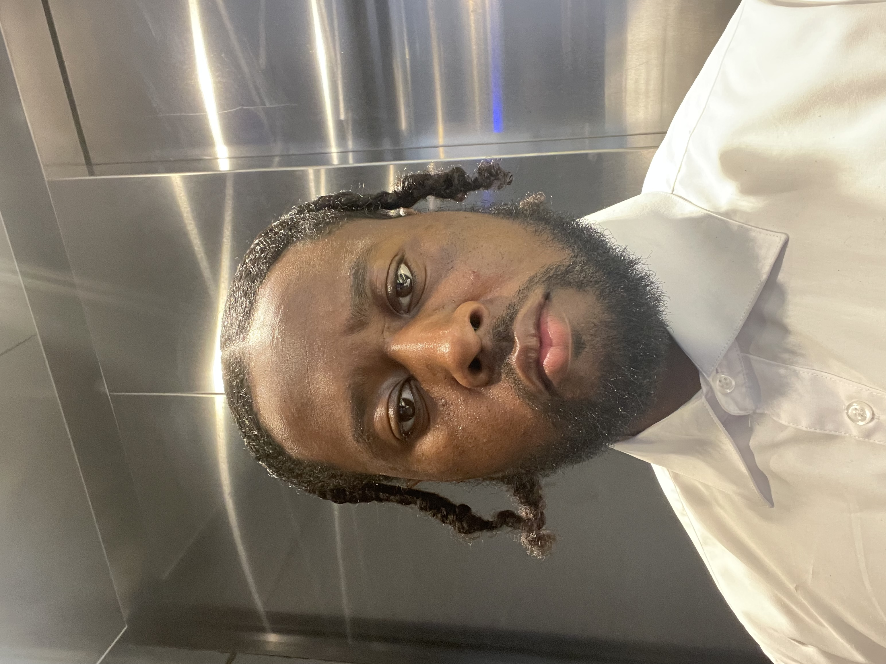

Andre Epps

Summary
Dynamic and Results Driven Creative Strategist with over 10 years
of diverse experience, including brand promotion and operational
management in both inside and outside sales. Excelled in exhibiting a
keen focus on driving growth in mid- market and enterprise sales sectors.
Demonstrated ability to consistently exceed revenue targets through
strategic planning, robust client relationship management.
Exceptional at identifying, securing, and managing high-level
business deals, having contributed to over $10 million in sales.
My skill set is a blend of technical knowledge as well as interpersonal
skills. My technical expertise involves data structures, HTML, CSS,
and JavaScript. My people skills include problem solving and collaborating
well in teams. I am seeking opportunities where I can utilize my existing
knowledge for the betterment of the organization as well as learn new skills
to enhance my potential and flourish myself professionally.
Education
- Bachelor of Fine Arts, Theatre, Columbia College of Chicago, 2010-2014
Work Experience
-
Manager - Meyvn
2015 - 2017
- Territory Leadership: Managed daily operational tasks,
ensuring efficient store functionality and customer service
excellence in apparel presentation and sales transactions.
- Account Strategy Expert: Assisted in developing e-commerce
strategies that enhanced global brand recognition and customer
loyalty, through strategic social creative marketed planning.
-
Strategic Brand Consultant, Mosaic Sales Solutions
2014 - 2015
- Directional Strategic Planner: Directed successful
activation and brand promotion initiatives for a major
beverage brand, securing industry recognition for campaign excellence.
- Visionary Storyteller: Conceptualized and established the visual theme
for high-profile events, ensuring brand consistency and audience engagement.
-
Stylist, Topman
2013 - 2014
- Inside/ Sales: Delivered personalized styling services,
effectively tailoring fashion recommendations to individual
client preferences and needs.
- Focused Management: Collaborated within
a dynamic sales team to consistently meet
a weekly sales target of $65,000.
Skills
- Technical skills: Salesforce, CRM, HTML, CSS, Javascript, Python
- Soft Skills: Project Management, Problem Solving, Leadership,
Data Management, Team Collaboration, Strategic Planning, Social Media, Marketing